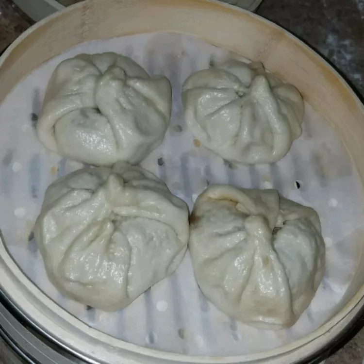

char siu bao

Description
ingredients
- ½ cup barbecue sauce
- ⅓ cup chicken broth
- 3 tablespoons shallots, chopped
- 1 tablespoon dark soy sauce
- 1 tablespoon vegetable oil
- 1 tablespoon white sugar
- 1 recipe Chinese Steamed Buns
steps
- Mix pork, barbecue sauce, broth, shallots, soy sauce, oil, and sugar together in a glass or ceramic bowl.
Cover and marinate in the refrigerator for at least 6 hours.
- About three hours before the meat has finished marinating, follow Steps 1 through 4 in the Chinese Steamed Buns recipe to make dough.
(This should take about 4 hours, so the dough will be ready when the pork has been cooked and shredded.)
- When pork has finished marinating, preheat an outdoor grill for medium heat and lightly oil the grate.
Cut 24 small squares of waxed paper.
- Remove pork from marinade and shake off excess. Discard remaining marinade.
- Cook pork on the preheated grill until an instant-read meat thermometer reaches 145 degrees F (63 degrees C), 10 to 15 minutes. Allow to cool, then shred or finely chop meat.
- Shape dough into 24 balls. Roll each ball into a circle and place 1 tablespoon pork in the center. Wrap dough up and over filling, then pinch to seal the edges. Place each bun, seam-side down, onto a waxed paper square; let stand until doubled in volume, about 30 minutes.
- Bring water to a boil in a wok over high heat. Reduce the heat to medium and maintain a boil. Insert a steamer basket or place a steamer plate onto a small wire rack in the middle of the wok. Working in batches and leaving the outer 2 inches of the steam basket uncovered, place buns (on waxed paper) into the steamer basket, spacing them 1 to 2 inches apart. Cover the wok and steam for 15 to 20 minutes.
- Remove the lid, then turn off the heat. (If you remove the lid after turning off the heat, condensation from the lid will drip onto the surface of the buns, causing yellowish blisters.) Remove buns from the wok.
- Repeat Steps 6 and 7 to steam remaining buns, adding more water to the wok as needed.